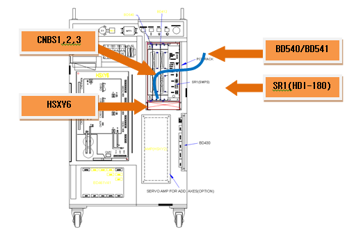
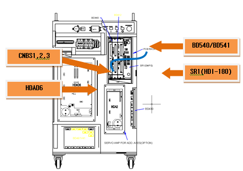
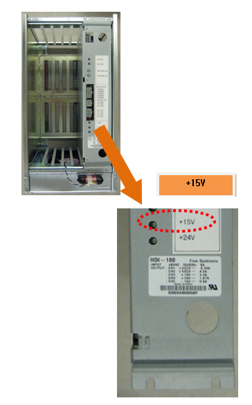
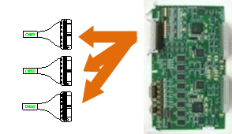
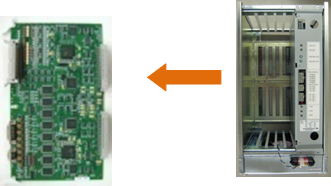

![텍스트 상자: 1. Check the power indicator LED.
A. Please check the “VE” LED of the Servo drive unit.
B. Please check the “+15 V” LED of SR1 (control power supply unit).
< Case: Both of the module’s LEDs are off. >
2. Check the output of SR1 (control power supply unit).
A. Please remove the CNBS cable, and check the LED.
B. Please remove the Servo board from the rack, and check the LED.
3. Examine the SR1 (control power supply unit).
A. Please check the input voltage to SR1.
B. Please replace the SR1 and check the LED.
< Case: Only the Servo drive unit’s “VE” LED is off. >
4. Replace the related components and check the power indicator LED.
A. Please replace the CNBS cable and check the LED.
B. Please replace the Servo board and check the LED.
C. Please replace the Servo drive unit and check the LED.](images/image189.png)
1.1.18.1. Outline
The control power that was supplied to the Servo drive unit (+15 V) has been reduced. This error is detected by the Servo drive unit and transferred to the Servo board through the CNBS cable.
1.1.18.2. Causes and checking methods
1. Check the power indicator LED.
Drive unit control voltage reduction error is caused by a reduction of the control voltage (+15 V). This error will be detected by the Servo drive unit and transferred to the Servo board (BD540/BD541) through the CNBS1, 2, and 3 cables to be handled.

Figure 5.56 Locations of the components in the Hi4a-0000 controller that are related to the drive unit control voltage reduction

Figure 5.57 Locations of the components in the Hi4a-0010/0012 controller that are related to the drive unit control voltage reduction
1) Examine the “VE” LED of the Servo drive unit.
Please check the “VE” of the drive unit control voltage error detection module (HSXY6, medium; and HDAD6, small). If the power is being supplied normally, the LED light should be staying on.
Medium-size robot’s Servo drive unit : HSXY6
Small-size robot’s Servo drive unit : HDAD6
2) Examine the “+15 V” LED of SR1
Please check the LED of SR1 if the Servo drive unit’s “VE” LED light is off.
Please check if the LED of SR1 and that of the Servo drive unit are both off at the same time.

Figure 5.58 Locations of the “+15 V” LED–related components of SR1
2. Check the output of SR1.
Please remove the wirings and components that are connected to the Servo drive unit, and examine the “+15V” LED to check the output of SR1 itself.
1) Remove the CNBS cable and check the LED.
Please remove CNBS1, 2, and 3 that connect the Servo drive unit and the Servo board. After the removal, please check the LED of SR1. If the “+15V LED” of SR1 turns on after the removal of cables, the Servo drive unit is faulty. Please replace the Servo drive unit with a new one.

Figure 5.59 CNBS Removal of the CNBS cable
2) Remove the Servo board (BD540/BD541) and examine the LED.
Please check SR1’s LED after you remove the Servo board from a rack. If the “+15 V LED” of SR1 turns on after the removal of the Servo board, the Servo board is faulty. Please replace the Servo board with a new one.

Figure 5.60 Removal of the Servo board from the rack
3. Examine the SR1 (control power supply unit).
The control power supply unit received AC 48 V (input) and output the necessary control power to each board from the internal circuit.
1) Examine the input voltage of SR1.
If the input voltage to SR1 exceeds the specification, the output of the control power may have an error. If the input voltage exceeds the allowed range, please examine according to the controller’s input voltage examination procedures and single-phase internal voltage examination procedures.
SR1 input voltage specification: Single-phase AC 48 V
Allowed range: 44–52 V
2) Replace the SR1 and check the LED.
Please replace the SR1 with a new one, and check the “+15 V” LED. After a new one is installed, if the LED is turned on, the previous SR1 is defective. Please replace and use it.
4. Replace the related components and check the power indicator (LED).
Please replace the Servo drive unit, Servo board, and CNBS cable, and check the “VE” LED of the Servo drive unit.
1) Replace the CNBS cable and check the “VE” LED.
Please replace CNBS1, 2, and 3 that connect the Servo drive unit and the Servo board, and check the “VE” LED. If the “VE” LED is on after the replacement, the cable is faulty. Please replace it with a new one.
2) Replace the Servo board and check the “VE” LED.
Please replace the Servo board and check the “VE” LED. If the “VE” LED is on after the replacement, the Servo board is faulty. Please replace it with a new one.
3) Replace the Servo drive unit and check the “VE” LED.
Please replace the Servo drive unit and check the “VE” LED. If the “VE” LED is on after the replacement, the Servo drive unit is faulty. Please replace it with a new one.
Medium-size robot’s Servo drive unit : HSXY6
Small-size robot’s Servo drive unit : HDAD6